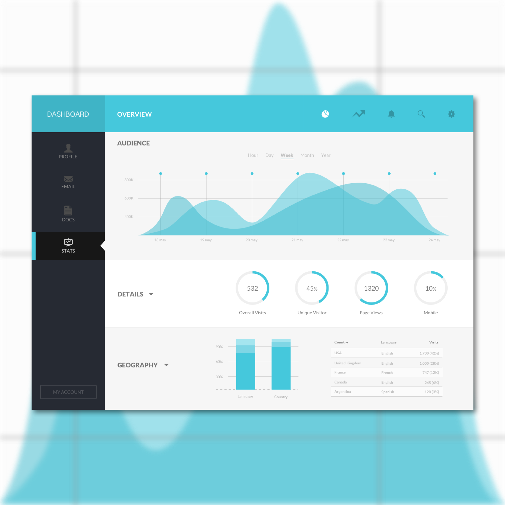

Day 88 - Waves of Data
Today I found a UI that I really liked that was created by Grégoire Vella who posted on Dribbble, so I decided to recreate it. As my skills in creating landing pages get better, I'm now transitioning to other user interface designs.
For this design, I started by setting the rectangular boxes on the top and to the left. This allowed me to know the area I'm working in. Then started to fill them in according to the example I'm following. I found all the icons that suited well with this on Google and adjusted the colour. Same goes for the top bar, I searched for icons that I liked and even if they weren't in PNG format, I still downloaded it anyways. I fixed it up by using the Magic Wand, then cropping it.
As for the Audience part, I played a lot with the opacity, making sure that the less important parts are less opaque. Also, for the graph, I had to make sure everything was evenly spaced and consistent. For the details section, it was really easy to create because I had experience creating something similar to this before. In order to create the circle bars, steps include "subtracting" and "masking."
The Geography section was pretty straightforward. However in order to make it look clean, everything must be consistent. If only Sketch had a table option, it would make creating tables a lot easier.
I'm glad that I decided to create this page. It brings me back to the consistent grid and column layout. The colour theme and simplicity went really well with this dashboard. It provides a easy-to-understand for new users and everything is very straightforward.